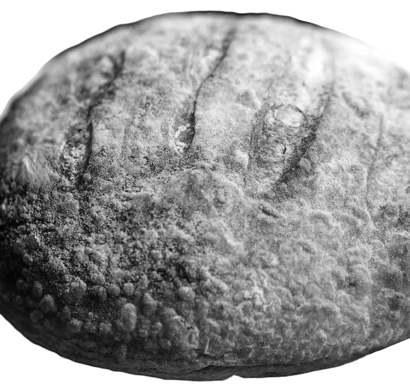

Mix
Flour, water, salt and the starter, by weight.
A test page for the recipes in the df-design cards: blur to focus, reading fill, scramble and odometer, the wordmark between two planes, a sticky stack, a pixel cut and a ring carousel, on smooth scroll that falls back to the browser's own.
Every word starts pale and takes the ink as the paragraph crosses the middle of the screen, so the reader's place in the sentence is the bright edge of the colour.

Flour, water, salt and the starter, by weight.
Slow, cold, overnight.
Hot stone, steam for the first quarter hour.
The next room opens in blocks.